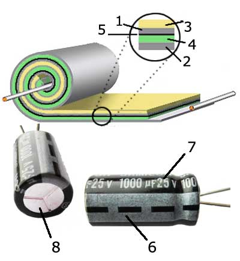

D3.1 Capacitance#
D3.1.1 Motivation#
Capacitors plays a major role in electronic circuits as well as other electrical appliancesOne application of capacitors in circuits are to act as storage banks for electric charge that can be readily discharged as needed for example in pulsed lasers and defibrilators. Other applications are in band-pass filters, AC couplers, and sensor systems such as a stud finder (finding studs hidden behind drywall, not cool physics professors wandering the halls of UVU).
D3.1.2 Definition#
A capacitor is simply any two (or more) separated conductors and we can assign it a capacitance \(C\):
where \(Q\) is the charge stored on the conductors (we assume charges on the two conductors to be \(+Q\) and \(-Q\), respectively) while \(\Delta V\) is the electric potential difference (or voltage) across the two conductors. The unit of capacitance is C/V and we define that as a Farad (F).
Since voltage refers to a electric potential difference (\(\Delta V\)) and we are free to choose a zero electric potential reference, we often let one conductor have electric potential \(V = 0\) and the other an electric potential \(V\). In this case, \(\Delta V = V - 0 = V\), and Eq. (1) is often written as
However, we should be aware that the \(V\) in this equation refers to the electric potential difference (or voltage) across the capacitor
There are many forms and shapes of capacitors. For now, we will focus our attention to the simplest system (which is also widely used in electronics): the parallel plate capacitor.
A defibrillator is a capacitor used to establish a voltage across the human heart to drive a current through the heart to restore normal heartbeat. A specific defibrillator is charged through an electrical outlet providing a voltage of \(120\) V across it. The capacitance of the defibrillator is \(220\) \(\mu\)F. How much charge is stored on its plates?
Show code cell source
%reset -f
dv = 120
c = 220E-6
q = c*dv
print('Charge on capacitor is '+str(q)+' C.')
Show code cell output
Charge on capacitor is 0.0264 C.
D3.1.3 Parallel Plate Capacitor#
Later in the course, we will derive the following equations, but for now we just want to become familiar with them and practice using them.
The capacitance of a parallel plate capacitor with a vacuum between the plates is
where \(\varepsilon_0 = 8.854\times 10^{-12}\) F/m is the vacuum permitivity, \(A\) is the area of one plate, and \(d\) is the spacing between the plates. We notice that the capacitance of the parallel plate capacitor is determined through by spatial properties only (aside from a constant).
The electric field between the plates is constant, uniform, and given in magnitude by
where \(\sigma\) is the surface charge density.
How much work is done by the electric field force in charging the capacitor from \(Q = 0\) to \(Q\)? Hint: the differential amount of work is the change in potential energy being build up as charges accumulates on the plates:
Use Equation (2) and integrate from \(q = 0\) to \(q = Q\) and then recognize that \(\Delta U = W\).
Show code cell source
%reset -f
import sympy as sym
Q = sym.Symbol('Q')
q1 = 0
q2 = Q
V = sym.Symbol('V')
q = sym.Symbol('q')
C = sym.Symbol('C')
V = q/C
w = sym.integrate(V,(q,q1,q2))
print('Work is '+str(w))
Show code cell output
Work is Q**2/(2*C)
A rather large, but typical, plate capacitor in an electrical circuit has a capacitance of \(2.2\times 10^{-3}\) F and a gap spacing of \(1.00\) mm. If this capacitor is build as a standard parallel plate capacitor, what is the surface area of the plates?
Show code cell source
%reset -f
C = 2.2E-3
d = 1.0E-3
per = 8.854E-12
A = C*d/per
print('The surface area of a plate is '+str(A)+' m^2.')
Show code cell output
The surface area of a plate is 248475.2654167608 m^2.
Obviously, the result from Box 3 would not make sense in an electrical circuite. Instead, these capacitors have dielectric material (like paper) that have large surface areas, but are folded into very small sizes. It is the origami of electronics.
